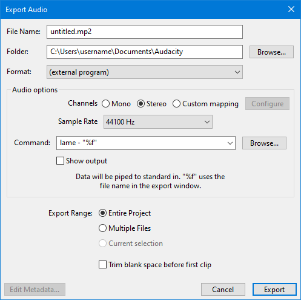

Exporting using an external encoder program
- With this you can export using the installed LAME MP3 encoder or FFmpeg encoder with additional parameters not supported in the options dialogs in the Export Audio Dialog.
- This can also be used to export using the very latest versions of LAME or FFmpeg (you would need to download those independently of Audacity).
- Or you could use it for exporting using an alternative MP3 encoder or to a specialized encoder in a format not otherwise supported by Audacity.
- Accessed by: then choosing (external program) from the Format dropdown menu.
- 
Audio Options
Channels
Sets the number of channels for the exported audio file. There are three options
- Mono: single channel
- Stereo: stereo pair with left and right channels - this is the default setting even if you only have mono tracks for exporting
- Custom mapping: use this to export multi-channel (surround sound) files or to make customized assignments between Audacity tracks and the channels in the exported file.
- Selecting this and clicking on the button causes the Advanced Mixing Options dialog to appear. For details please see Advanced Mixing Options.
Sample Rate
Sets the sample rate for the exported file. Default setting is 44100 Hz, which is CD quality.
Command
In the Command: box type:
- The path to the program
- If the program syntax requires it, space then the infile command
- Space, hyphen
- If required, space then valid output options for the file
- If the program syntax requires it, space then the outfile command
- Finally (assuming file output), space then "%f".
The "%f" command passes the file name and extension entered in the Export Audio dialog as the output file of the external program.
Two default commands are provided (these only work on Windows and Linux not on Mac):
| lame - "%f" |
and
| ffmpeg -i - "%f" |
| On Mac with either the LAME or FFmpeg Commands that the dialog offers by default (as shown above), the export fails and an error message will be displayed. |
The "Command" box holds up to the last 12 items entered. When a thirteenth command is entered, the first one (at the bottom of the list) is removed.
Setting the path to the encoder
Windows and Linux
Accessing the LAME or FFmpeg command-line program with just the "lame" or "ffmpeg" command (as shipped with Audacity) only works on Windows and Linux, assuming LAME or FFmpeg are installed on the system in the standard location.
On Windows, this requires that you used the LAME or FFmpeg EXE installer and did not change the installation directory.
For using a downloaded version of LAME or FFmpeg, the full path to the command-line program must be given. The path must be enclosed inside quotes if there are any spaces in the path.
You can use the button to find and open the executable application which will add the correct path to the command.
Mac
| On Mac the shipped commands for "lame" and "ffmpeg" do not work, trying them will simply generate an error message. |
Accordingly it is necessary to download a version of LAME or FFmpeg.
As with Widows and Linux, the full path to the command-line program must be given. The path must be enclosed inside quotes if there are any spaces in the path.
You can use the button to find and open the executable application which will add the correct path to the command.
Other controls
- Opens a "Find path to command" window where you can select the command-line program you want to use. Clicking "Open" will then enter the path to that program in the "Command:" box, ready for you to add the commands and "%f" after the path.
 Show output If checked, a Command Output window in Audacity will display a success or failure message from the external program. If unchecked, the window will only appear in the case of an error message.
Show output If checked, a Command Output window in Audacity will display a success or failure message from the external program. If unchecked, the window will only appear in the case of an error message.
LAME examples
If you are exporting to MP3 with LAME, there is a complete list of commands including metadata tags on the usage page.
For example, the default LAME command creates a 64 kbps (mono) or 128 kbps (stereo) constant bit rate MP3 at quality level "3".
| lame - "%f" |
To produce a variable bit rate MP3 of minimum 112 kbps bit rate, with a copyright marker and CRC error checking enabled:
| lame - -v -b 112 -c -p "%f" |
By default, both ID3v1 and ID3v2 tags are exported. The following command writes a title tag "my song title" and year tag "2001" in ID3v1 (at the bottom of the file) and ID3v2 (at the top of the file):
| lame - --tt "my song title" --ty 2001 "%f" |
To export only ID3v1 or ID3v2 tags use --id3v1-only or --id3v2-only, for example:
| lame - --id3v1-only --tt "my song title" --ty 2001 "%f" |
FFmpeg examples
If exporting using FFmpeg, you can view the FFmpeg command-line usage in the FFmpeg documentation. Guidance on valid metadata tags for various formats supported by FFmpeg can be found at http://wiki.multimedia.cx/index.php?title=FFmpeg_Metadata. For example this command exports to 256 kbps MP2 using FFmpeg:
| ffmpeg -i - -acodec mp2 -ab 256000 "%f" |
Next, here are two example commands that use "-strict experimental" to specify the native FFmpeg AAC encoder. The native encoder is required to export more than stereo, up to a maximum of 6 channels. To export up to 8 channels you must point the same command to latest FFmpeg-git. Change the value before "k" in the following command to set a different bit rate in kbps. Note: "-strict experimental" is not required in this command if using latest FFmpeg-git:
| ffmpeg -i - -strict experimental -c:a aac -b:a 240k "%f" |
The following command specifies a VBR quality range instead of bit rate:
| ffmpeg -i - -strict experimental -c:a aac -q:a 10 "%f" |
Here is an example of a command to FFmpeg in an arbitrary location on Windows, forcing the exported codec to Apple lossless. When specifying the file name above the command, add the extension ".m4a" (without quotes), not .alac:
| "E:\FFmpeg for Audacity\ffmpeg.exe" -i - -acodec alac "%f" |
Finally, here is an example command to FFmpeg in an arbitrary location on Mac, setting metadata for genre and artist/composer in an exported M4A file with the standard AAC (lossy) codec:
| /Applications/FFmpeg_for_Audacity_on_OSX/ffmpeg -i - -metadata genre="pop" -metadata author="Jo S" "%f" |
FLAC examples
See https://xiph.org/flac/documentation_tools_flac.html for FLAC command-line syntax and options.
This command exports a FLAC file without any options:
| "C:\Program Files\FLAC\flac.exe" - -o "%f" |
This command exports a FLAC file, specifying TITLE and ARTIST tags:
| "C:\Program Files\FLAC\flac.exe" - -T "TITLE=Bohemian Rhapsody" -T "ARTIST=Queen" -o "%f" |